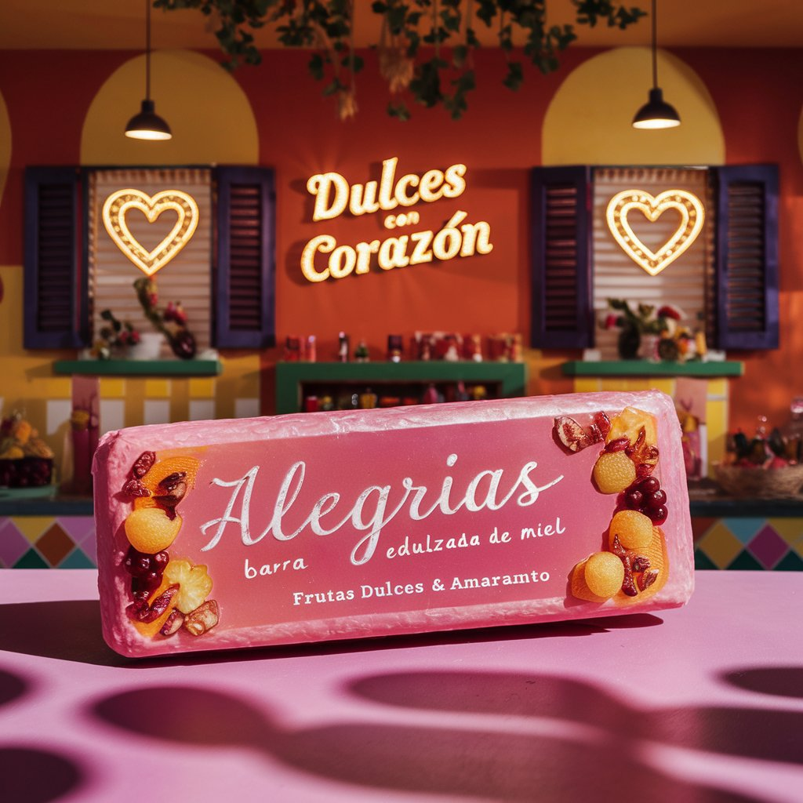
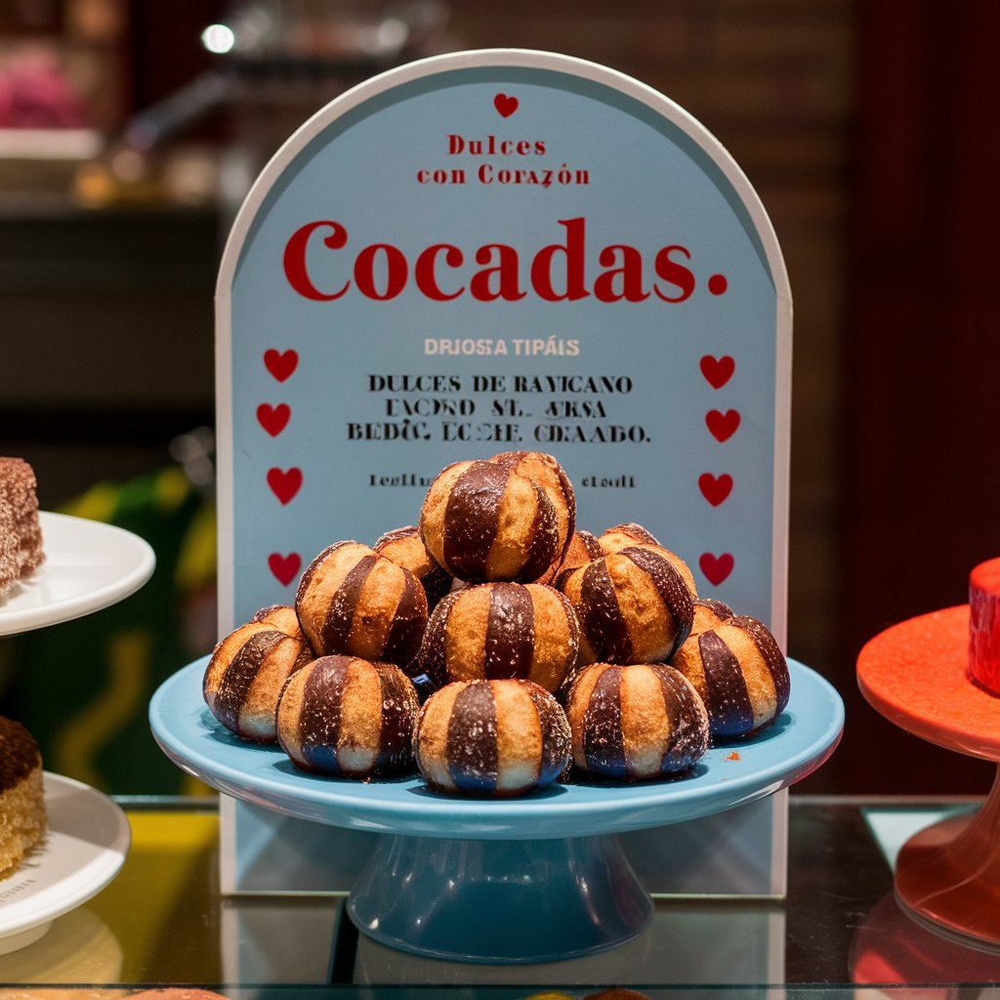
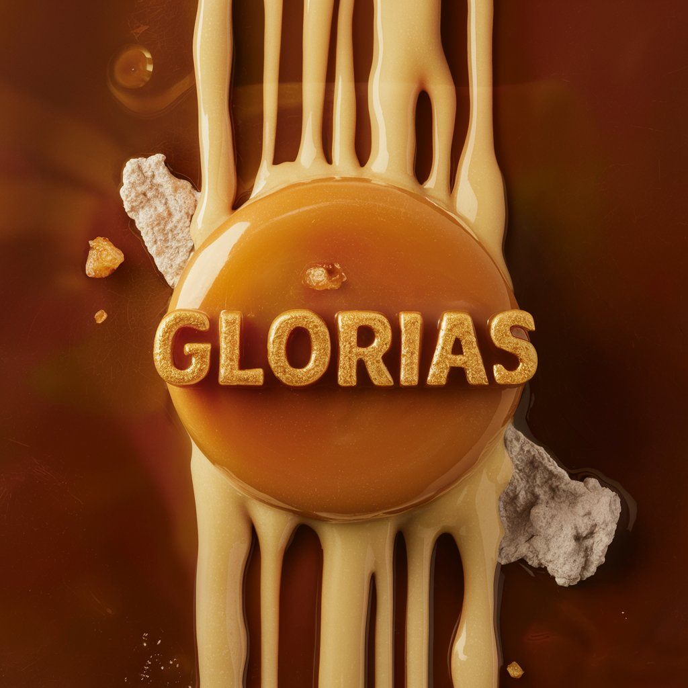

Alegrias
Disfruta de nuestras deliciosas alegrías, barras de amaranto endulzadas con miel. Perfectas para un snack saludable y lleno de energía. ¡Siente la felicidad en cada mordida!

Cocadas
Deléitate con nuestras cocadas, dulces de coco rallado horneados hasta obtener una textura crujiente por fuera y suave por dentro. ¡Un placer que no te puedes perder!

Gloras
Descubre el sabor auténtico de las glorias, dulces de leche quemada con un toque de caramelo. Suaves y cremosas, ¡son un regalo perfecto para cualquier ocasión!

Obleas de cajeta
Nuestras obleas con cajeta son una combinación irresistible de oblea crujiente y dulce de leche de cabra. ¡Un clásico mexicano que te encantará!
Jamoncillo de leche
Deléitate con nuestro jamoncillo de leche, dulce de leche cocida hasta espesar con una textura suave y cremosa. ¡Ideal para un antojo dulce y tradicional!